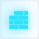
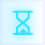

<script src="./js/jquery.min.js"></script>

<script src="//cache.amap.com/lbs/static/es5.min.js"></script>

<script>
	window.forceWebGL = true;
</script>

<section class="site_center site_center1 fl" style="padding-top: 12%;width:17%;">
	<div style="width:420px;background: linear-gradient(to left,rgba(12, 37, 121,0), rgba(12, 37, 121,0.8));
		position: absolute;height: 1038px;top: -48px;left: 19px;"></div>
	<div class="center_title pos_abs">
		<div id="charging_station" class="animate_inside"></div> 
		<h1>充电站</h1>
	</div>
	<div class="pos_abs" style="margin-top:70px;">
		<span style="font-size:40px;" class="stationstatioTotal myfont"></span> 个
	</div>
	<div class="build mt40 pos_abs" style="top:230px;">
		
		<p>在建<span style="font-size:32px;" class="inConstructionCount myfont"></span><span>个</span></p>
	</div>
	<div class="build mt40 pos_abs" style="top:290px;">
		
		<p>待建<span style="font-size:32px;" class="toBeBulitCount myfont"></span><span>个</span></p>
	</div>
	<div class="build_chart pos_abs" style="top:344px;">
		<div id="site_build" class="mt40" style="height:120px;width:120px;"></div>
		<div style="position: absolute;top:72px;left:4px;width: 170px;">
			<p><span style="font-size:24px;" class="insideCount myfont"></span>个</p>
			<p style="font-size:16px;">对内 <span style="color:#E79E26;font-size:18px;font-weight: 600;" class="insideRate myfont"></span></p>
		</div>
	</div>
	<div class="pos_abs" style="text-align: center;width:292px;top:520px;left:-60px;">
		对外<span style="color:#E79E26;font-size:22px;font-weight: 600;" class="outsideRate myfont"> </span><span class="outsideCount myfont" style="font-size: 22px;"></span>个
	</div>
</section>

<section class="site_center site_center2 fl" style="height: 980px;">
	<div id="mapcontainer" style="width:1038px;height:1078px;position: absolute;left:-161px;top:-48px;"></div> 
	<div class="center_nav" style="bottom:-30px;left: 56px;">
		<ul>
			<li>
				<p id="site_panorama">
					<span>全景视图</span>
				</p>
			</li>
			<li class="active">
				<p id="site_streetscape">
					<span>街景视图</span>
				</p>
			</li>
		</ul>
	</div>
	<div class="center_list">
		<ul>
			<li class="active" id="site_overview">
				
				<p>站点分布</p>
			</li>
			<li id="user_overview">
				
				<p>站点用户</p>
			</li>
			<li id="income_overview">
				
				<p>站点收入</p>
			</li>
		</ul>
	</div>
</section>

<section class="site_center site_center3 fr" style="padding-top: 12%;padding-left: 12px;width:18%;">
	<div style="width:420px;background: linear-gradient(to right,rgba(12, 37, 121,0), rgba(12, 37, 121,0.8));
		position: absolute;height: 1038px;top: -48px;right: -1px;"></div>
	<div class="center_title pos_abs">
		<div id="charging_pile" class="animate_inside"></div>
		<h1>充电桩</h1>
	</div>
	<div class="pos_abs" style="margin-top:70px;">
		<span style="font-size:40px;" class="stationpileCount myfont"></span> 个
	</div>
	
	<div class="electric mt50 pos_abs" style="top:214px;">
		<ul class="data_title">
			<li>
				<h4>快充</h4>
				<p>70<span>%</span></p>
			</li>
			<li style="text-align: right;">
				<h4>慢充</h4>
				<p style="color: #FFAB00;">30<span>%</span></p>
			</li>
		</ul>
		<ul class="data_list">
			<li style="width:70%;background: linear-gradient(to right,#47D3FF, #00B4FF);"></li>
			<li style="width:30%;background: linear-gradient(to right,#FFAB00, #FFDB65);"></li>
		</ul>
	</div>
	<div class="gun mt50 pos_abs" style="top:310px;">
		
		<p style="display: inline-block;">实时充电率</p>
		<p style="margin-left:42px;width:128px;"><span style="font-size:48px;" class="sitechargingPercent myfont"></span>%</p>
	</div>
	<div class="build mt60 pos_abs" style="top:406px;">
		
		<p style="margin-top:0px;font-size:16px;">离线率<span style="font-size:26px;" id="offLinePercent" class="myfont"></span><span>%</span></p>
	</div>
	<div class="build mt50 pos_abs" style="top:470px;">
		
		<p style="margin-top:-2px;font-size:16px;">故障率<span style="font-size:26px;" id="problemPercent" class="myfont"></span><span>%</span></p>
	</div>
</section>
<div class="line"></div>
<div class="line1"></div>
<!-- <script src="./js/jquery.countup.js" type="text/javascript" charset="utf-8"></script> -->
<!-- <script src="./js/jquery.waypoints.min.js" type="text/javascript" charset="utf-8"></script> -->
<script src="./js/TweenLite.min.js" type="text/javascript"></script>
<script src="./js/lem_counter.js" type="text/javascript"></script>
<script src="./js/getsitedata.js"></script>
<!-- <script src="./js/getincome.js"></script> -->
<script src="./js/getanimate.js" type="text/javascript" charset="utf-8"></script>
<script>
	$("#income_overview").click(function() {
		$('#part').load('./income-overview-streetscape.html',function(){
			$.myAnimate.incomeAnimate();
		});
	})
	$("#user_overview").click(function() {
		$('#part').load('./user-overview-streetscape.html',function(){
			$.myAnimate.userAnimate();
		});
	})
	$("#site_overview").click(function() {
		$('#part').load('./site-overview-streetscape.html',function(){
			$.myAnimate.siteAnimate();
		});
	})
	$("#site_panorama").click(function() {
		$('#part').load('./site-overview.html',function(){
			$.myAnimate.siteAnimate();
		});
	})
</script>

<script>
	window.forceWebGL = true;
	var map2 = new AMap.Map('mapcontainer', {
		resizeEnable: true,
		rotateEnable: true,
		pitchEnable: true,
		zoom: 10,
		pitch: 50,
		viewMode: '3D', //开启3D视图,默认为关闭
		buildingAnimation: true, //楼块出现是否带动画
		mapStyle: 'amap://styles/39da5b5a6ff18f26344edb0027f314b2 ',
		expandZoomRange: true,
		zooms: [3, 20],
		center: [113.264943, 23.15551]
	});
	getStationInServiceMapData();
	function getStationInServiceMapData() {
		$.ajax({
			url: "/statistic/GuangJiaoUsersViewAjax/getStationInServiceMapData.json",
			data: {},
			dataType: "json",
			type: "POST",
			success: function(data) {
				var markers = [],
					positions = [];
				for (var i in data) {
					var position = {
						"siteid": data[i].stationId,
						"sitename": data[i].stationName,
						"sitexy": [data[i].lng, data[i].lat]
					};
					positions.push(position);
				}
				buildMarkers(markers, positions);
			},
			error: function() {
				AMUI.dialog.alert({
					title: '温馨提示',
					content: "网络异常！请稍后..."
				});
			}
		});
	}
	function buildMarkers(markers, positions) {
		var icon = new AMap.Icon({
			size: new AMap.Size(58, 58), // 图标尺寸
			image: 'img/marker.png', // Icon的图像
			imageSize: new AMap.Size(58, 58), // 根据所设置的大小拉伸或压缩图片
		});
		for (var i = 0, marker; i < positions.length; i++) {
			marker = new AMap.Marker({
				map: map2,
				position: positions[i]["sitexy"],
				offset: new AMap.Pixel(-22, -47),
				icon: icon, // 添加 Icon 图标 URL
				title: positions[i]["sitename"],
				siteid: positions[i]["siteid"],
			});
			marker.on('click', function() {
				location.href = "./site-overview-inside.html?stationID=" + this.B.siteid;
			});
			markers.push(marker);
		}
	}
</script>
